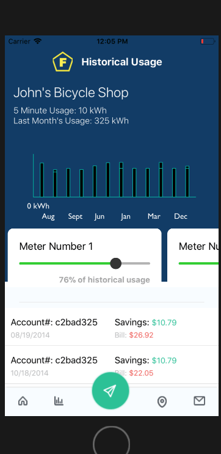

Nommad
Check out the code here

Nommad is our solution to finding food trucks near you. Nommad shows you all food trucks within a 10 mile radius of the zip code you enter. You can even find food trucks in different countries! By using the Yelp API, we bring you a user friendly design that makes getting good food less of a hassle.
This was my second group project at General Assembly. I wasn't very hyped about our project, but it still came out well in the end. I tried working with the front end for this project, but near the end of the project, I realized that designing really wasn't my strong suit so I ended up helping out a bit with the functionality which was similar to the functionality I did with our first group projects.

I ended up having to overcome many obstacles while working on this project. Usually the obstacles that I had to overcome were things like bad documentation or not enough information on a bug. Part of the time, it was me trying to understand a bad implementation of a wireframe I had received that wasn't user friendly. I also had to do a lot of logical thinking for the chat support screen. The chat support screen was supposed to be a short showcase on how it would be used. I had to think of a way to create an AI that responds to users and their questions about Frank. Interestingly enough, the hardest part for me was figuring out how to get a chart to appear on the screen. I looked for a package that would make a chart if it's given data and the best thing I ended up finding was a package called "victory-native". After trying to understand the documentation and going through tricky manual installations, I found a forum of people who use victory-native. That was the hardest part.
